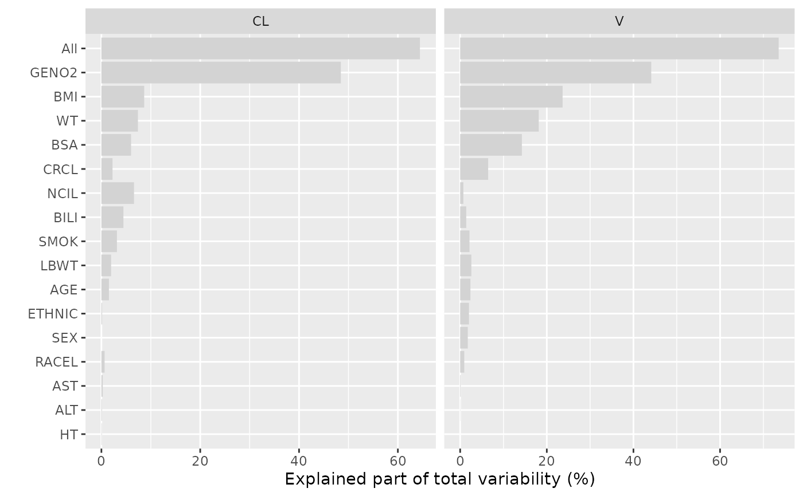

Plot the explained variability of covariates in a FREM model
plotExplainedVar.RdWith maxVar=1 the explained variability of the covariate (combination) in each row of dfres (COVVAR) is divided by the value in TOTVAR and multiplied by 100. With maxVar=2 the explained variability of the covariate (combination) in each row of dfres (COVVAR) is divided by the value in TOTCOVVAR and multiplied by 100.
Usage
plotExplainedVar(
dfres,
parameters = unique(dfres$PARAMETER),
parameterLabels = NULL,
covariateLabels = NULL,
labelfun = ggplot2:::label_value,
fill_col = "lightgrey",
x_scale = "free_x",
maxVar = 1,
xlb = ifelse(maxVar == 1, "Explained part of total variability (%)",
"Explained part of explainable variability (%)"),
reordFun = "mean",
add.stamp = FALSE,
...
)Arguments
- dfres
A data.frame with data to plot. Typically obtained by
getExplainedVar.- parameters
A vector with the names of the parameters to include in the plot. The parameter names must be present in the
dfres$PARAMETER.- parameterLabels
A character vector of alternative parameter labels. Should either have the same length as
parametersor the same length as the number of rows indfres.- covariateLabels
A character vector of alternative covariate labels. Should have the same length as the number of rows in
dfres.- labelfun
A label function compatible with
labeller. Used to formatparameterLabelsused as row facet labels in the plot.- fill_col
The fill color of the bars.
- maxVar
maxVar=1 (default): Visualize the explained part of the total variability. maxVar=2: Visualize the explained part of the explainable variability.
- xlb
X-axis title.
- reordFun
The function used for the main effects ordering of the bars in the plots. Default is mean.
- add.stamp
if TRUE adds a stamp with the source directory and time of generation at the bottom of the plot using
add_stampfunction. Default is FALSE. If there is any variable defined in the global environment with the same name, ie.add.stamp, this argument will assume the globally defined value ofadd.stamp, unlessadd.stampargument is explicitly defined when this function is called.- ...
is optional arguments that are passed tp
add_stampand further toggplot2::ggsave
See also
Other Diagnostics & Plotting:
calcEtas(),
calcFremShrinkage(),
fremParameterTable(),
getExplainedVar(),
getForestDFFREM(),
plotCovDist(),
plotEtasCov(),
traceplot()
Examples
modDevDir <- system.file("extdata/SimNeb",package="PMXFrem")
fremRunno <- 31
modFile <- file.path(modDevDir,paste0("run",fremRunno,".mod"))
covNames <- getCovNames(modFile = modFile)
## Set up dfCovs
dfData <- read.csv(system.file("extdata/SimNeb/DAT-2-MI-PMX-2-onlyTYPE2-new.csv", package = "PMXFrem")) %>%
filter(BLQ == 0) %>%
distinct(ID,.keep_all = TRUE)
dfCovs <- setupDfCovsEV(modFile)
cstrCovariates <- c("All",names(dfCovs))
## A list of functions
functionList2 <- list(
function(basethetas,covthetas, dfrow, etas, ...){ return(basethetas[2]*exp(covthetas[1] + etas[3]))},
function(basethetas,covthetas, dfrow, etas, ...){ return(basethetas[3]*exp(covthetas[2] + etas[4]))}
)
functionListName2 <- c("CL","V")
dfres1 <- getExplainedVar(type = 0,
data = dfData,
dfCovs = dfCovs,
numNonFREMThetas = 7,
numSkipOm = 2,
functionList = functionList2,
functionListName = functionListName2,
cstrCovariates = cstrCovariates,
modDevDir = modDevDir,
runno = fremRunno,
ncores = 2,
quiet = TRUE,
seed = 123
)
plotExplainedVar(dfres1)
